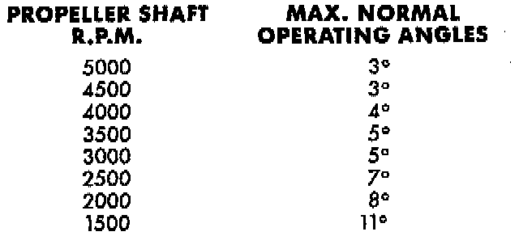

Joint Angle

When two shafts come together at a common joint, the bend that is formed is called the operating angle. The larger the angle, the larger the amount of acceleration and deceleration of the joint. This speeding up and slowing down of the joint must be cancelled to produce a smooth power flow. This is done through the phasing of a propeller shaft and ensuring that the proper propeller shaft joint working angles are maintained.
A propeller shaft is properly phased when the yoke ends are in the same plane, or in line. A twisted shaft will make the yokes out of phase and cause a noticeable vibration.
When taking propeller shaft joint angle measurements, or checking the phasing, of two piece shafts, consider each shaft separately. Having the correct front shaft input (pinion shaft) angle has higher priority than having the correct caster angle.
Ideally the driveline system should have;
- Angles that are equal or opposite within 1 degree of each other.
- Have a 3 degree maximum operating angle.
- Have at least a 1/2 degree continuous operating (propeller shaft) angle.
Engine speed (rpm) is the main factor in determining the maximum allowable operating angle. As a guide to the maximum normal operating angles refer to image.